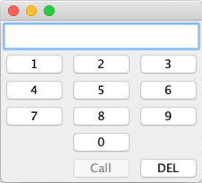
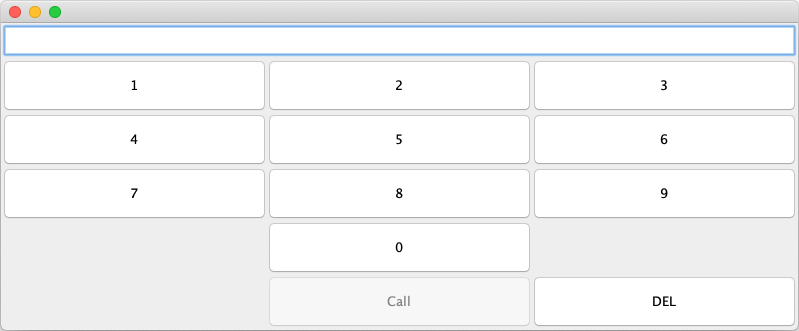

Potrebno je napraviti izgled aplikacije za pozivanje telefonskih brojeva koji izgleda kao na sljedećim slikama:


Razlika izmađu slika je u veličini tj. koliko smo rastegnuli prozor.
Sve je potrebno implementirati u klasi Dialer koja se nalazi u paketu hr.fer.oop.zi.z4.
Napomena: U predložku su označena mjesta s komentarom // TODO ... koja treba nadopuniti.
U gornjem dijelu aplikacije nalazi ispis broja koji smo postiskali (JTextField). U srednjem dijelu je panel s gumbima.
U metodi setupLayout klase Dialer kreirajte grafičko sučelje prikazano na slikama. Za layoute možete koristiti klase FlowLayout, GridLayout i BoarderLayout.
Također je potrebno definirati ponašanje za sve gumbe u metodi registerListeners. Kada se pritisne gumb s brojem pozove se metoda numberPressed. Kada se pristisne gumb DEL onda se pozove metoda deletePressed. Kada se pritisne gumb Call onda se pozove metoda callPressed.
U metodi numberPressed je potrebno potrebno napraviti logiku unosa broja i njegov prikaz na gornjem ispisu. Ako je na početnu ispisana prazno i pritisne se neki broj onda se taj broj pokaže. Kada se pritisne neki drugi broj on se dodaje desno od njega. Brojevi u ispisu su odvojeni razmacima po 3 znamenke počevši od desne strane. Npr. ako smo prisitsnuli brojeve 1234567 onda se treba prikazati 1 234 567.
Ako se pritisne gumb DEL onda se briše zadnja znamenka s desne strane npr. nakon prošlog unosa kada pritisnemo DEL treba pisati 123 456. Ako smo sve obrisali onda treba biti ispisano prazno.
Gumb Call je na početku onemogućen jer se ne može nazvati broj koji ne postoji (prazno je). Kada se pritisne barem jedan broj onda se omogućuje gimb Call. Ako se sve obriše onda se opet treba onemogućiti gumb Call.
Ako je gumb Call omogućen i pritisnut onda se njegov tekst mijenja u Abort, a umjesto broja se ispiše Calling.... Kada pritisnemo gumb Abort obriše se ispis (prazno) i može se početi upisivati novi broj od početka. Osim toga se tekst na gumbu Abort mijenja u Call u pošto ne postoji broj koji se može zvati gumb Call mora biti onemogućen.
U klasu Dialer slobodno možete dodavati atribute/članske varijable i privatne metode po potrebi.